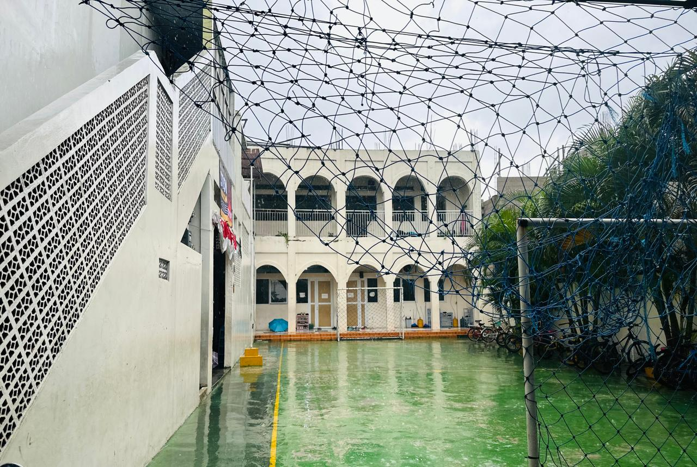

Religius

Masjid Sekolah
Tempat yang tenang untuk ibadah dan menenangkan hati.
Sportif

Lapangan Utama
Tempat mengasah bakat dan kesehatan jasmani.
Kombinasi antara Ibadah dan Olahraga
Tempat yang tenang untuk ibadah dan menenangkan hati.
Tempat mengasah bakat dan kesehatan jasmani.